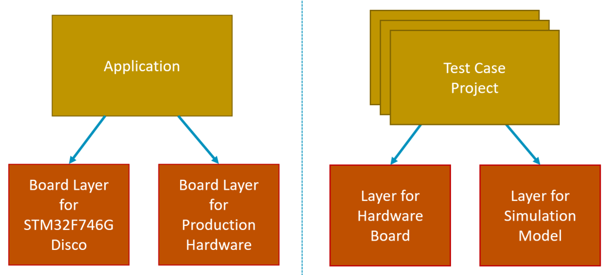
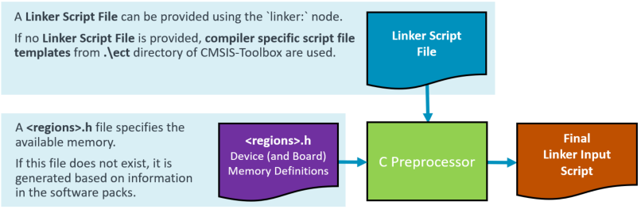

CSolution Project Structure
This chapter outlines the structure of csolution project files that contain the build information of the software application.
- Project Examples and project templates help to get started with the tools.
- Software Layers provide reusable configurations and give projects a better structure.
- Directory Structure describes the overall directory structure of projects.
- Linker Script Management defines the available memory and controls the linker operation.
- Generator Support integrates configuration tools such as STM32CubeMX or MCUXpresso Config.
Overview of Operation
The diagram below outlines the operation of the csolution command convert that processes the csolution project with one or more context configurations for an application.
Tip
- Project Examples show different project types and provide templates for user projects.
- Build Process Overview explains the complete end-to-end build process.

| Input Files | Description |
|---|---|
| Generic Software Packs | Provide re-usable software components that are typically configurable towards a user application. |
| DFP Software Packs | Device-related information (including memory sizes) for the tool configuration. |
| BSP Software Packs | Board specific configuration (i.e. additional memory resources). |
| cdefault.yml | When enabled with cdefault:, setup of toolchain specific controls and pre-defined toolchains. |
| *.csolution.yml | Complete scope of the application with sub-projects. Defines target and build types. |
| *.cproject.yml | Content of an independent build step (linker or library archiver run). |
| *.clayer.yml | Set of source files along with pre-configured components for reuse in different applications. |
| Input/Output Files | Description |
|---|---|
| *.cbuild-pack.yml | Exact list of the packs that are used by the application; enables reproducible builds as it locks the pack versions. |
| *.cbuild-set.yml | Specifies the context set of projects, target-types, and build-types that are used to generate the application image. |
| Output Files | Description |
|---|---|
| *.cbuild-idx.yml | Index file of all *.cbuild.yml build descriptions; contains also overall information for the application. |
| *.cbuild.yml | Build description of a single *.cproject.yml input file for each context. |
| Run-Time Environment (RTE) | Contains the user-configured files of a project along with the RTE_Components.h inventory file. |
| Linker Script Files | Header file that describes the memory resources. |
To generate the build information of an application project, the csolution command convert executes the following steps:
-
Read Input Files (csolution project and Software Packs)
-
Process each project context (selected by a context-set or option:
--context): -
Generate Output Files:
- Update configuration files in RTE directory (disable with option:
--no-update-rte). - Print results of software component dependency validation.
- Update configuration files in RTE directory (disable with option:
Source Code of Software Packs
Software packs and the related components: allow you to share and reuse code. The content of a software pack is, therefore, read-only (with the exception of configuration files that are copied to the RTE directory) as these source code files should not be modified by a user.
The benefit is a clean project directory that only contains the user code and configuration files for components:. This keeps a repository small and makes it easy to upgrade to a new pack version.
Note
- During the development of a software pack, you may install a repository, which contains the source of the software pack.
- You may copy the content of a software pack to your project workspace and provide a path to the pack.
Project Examples
GitHub repositories
The following repositories provide several working examples:
| Repository | Description |
|---|---|
| csolution-examples | Contains several getting started examples that show single-core, multi-core, and TrustZone setup as well as how to use a generator (CubeMX). |
| github.com/Arm-Examples | Contains many examples that include CMSIS-Toolbox setup. |
The section below explains the overall concepts considered by the csolution Project Manager based on examples.
Template Projects
The following *.csolution.yml templates may be used to create embedded applications.
| Template | Description |
|---|---|
| Simple | A csolution.yml template with a single *.cproject.yml. |
| Multicore | A csolution.yml template with multiple *.cproject.yml files, each targeting one processor of a multicore device. |
| TrustZone | A csolution.yml template with a non-secure *.cproject.yml and an optional secure *.cproject.yml file. |
| UnitTest | A csolution.yml template that shares one HAL *.clayer.yml with multiple *.cproject.yml files for unit testing. |
To use these templates, copy the content of the folder to your own application folder. Then adapt the names accordingly and add missing information.
Refer to CMSIS-Toolbox Templates for more details.
Minimal Project Setup
A minimal application requires two files:
-
Sample.csolution.ymlthat defines a target type with board or device. It includes a project and selects a compiler. -
Sample.cproject.ymldefines the files and software components that are translated into an image or library archive.
Note
When no packs: are specified in csolution project files, the tools use the latest version of the installed packs.
Simple Project: Sample.csolution.yml
solution:
cdefault: # use default setup for toolchains
compiler: AC6 # select the compiler to use
packs: # explicit pack selection may be omitted
- pack: NXP::K32L3A60_DFP@16.0.0 # specify DFP
- pack: NXP::FRDM-K32L3A6_BSP@16.0.0
target-types:
- type: FRDM-K32L3A6
board: FRDM-K32L3A6
build-types: # defines toolchain options for 'debug' and 'release'
- type: Debug
debug: on
optimize: debug
- type: Release
debug: off
optimize: balanced
projects:
- project: ./Sample.cproject.yml
Simple Project: Sample.cproject.yml
project:
packs:
- pack: ARM::CMSIS # specify additional packs
groups:
- group: App
files:
- file: ./main.c
components:
- component: CMSIS:CORE
- component: Device:Startup
Context
A context is defined in the *.csolution.yml file by projects:, target-types:, and build-types:. It identifies a configuration with project-name, build-type, and target-type and is used on various places in the CMSIS-Toolbox.
The following context refers to the example above and selects the project: Sample.cproject.yml with build-type: Debug and target-type: FRDM-K32L3A6:
Sample.Debug+FRDM-K32L3A6
The context allows you to refer to each possible build combination that, by default, uses a different output directory. A context may be partly specified in many places.
The context-set defines a combination of projects and is useful when an application is composed of multiple related projects.
Toolchain Agnostic Project
Generic Translation Control settings enable projects that work across the range of supported compilers (AC6, GCC, IAR, CLANG). The Translation Control settings are mapped to specify compiler controls by the build tools.
cdefault.yml
The cdefault.yml file contains a common set of compiler-specific settings that select reasonable defaults with misc: controls for each compiler. The cdefault: node in the *.csolution.yml file enables the usage of this file. The directory <cmsis-toolbox-installation-dir>/etc contains a cdefault.yml file that is used when no local copy of the cdefault.yml file is provided.
Note
It is recommended that a local copy of the cdefault.yml file be provided in the same directory that stores the *.csolution.yml file.
Example:
default:
misc:
- for-compiler: AC6
C-CPP:
- -Wno-macro-redefined
- -Wno-pragma-pack
- -Wno-parentheses-equality
- -Wno-license-management
C:
- -std=gnu11
ASM:
- -masm=auto
Link:
- --entry=Reset_Handler
- --map
- --info summarysizes
- --summary_stderr
- --diag_suppress=L6314W
- for-compiler: GCC
C-CPP:
- -masm-syntax-unified
- -fomit-frame-pointer
- -ffunction-sections
- -fdata-sections
C:
- -std=gnu11
Link:
- --specs=nano.specs
- --specs=nosys.specs
- -Wl,-Map=$elf()$.map
- -Wl,--gc-sections
- -Wl,--no-warn-rwx-segments # suppress incorrect linker warning
- for-compiler: CLANG
C-CPP:
- -fomit-frame-pointer
- -ffunction-sections
- -fdata-sections
C:
- -std=gnu11
Link:
- -lcrt0
- -Wl,-Map=$elf()$.map
- -Wl,--gc-sections
- for-compiler: IAR
C-CPP:
- --dlib_config DLib_Config_Full.h
Link:
- --map=$elf()$.map
Compiler Selection
There are two ways to select a toolchain:
- An explicit
compiler:selection in the*.csolution.ymlproject file:
solution:
cdefault: # use the cdefault.yml file with toolchain specific controls
compiler: AC6 # select Arm Compiler
:
- The command line option
--toolchainof thecbuildorcsolutiontool overwrites anycompiler:definition in the csolution project files.
cbuild Hello.csolution.yml --toolchain GCC
Tip
- Toolchain agnostic example projects do not contain a
compiler:selection in the*.csolution.ymlproject file. - Instead the
select-compiler:node list the compilers that this csolution project is tested with. The VS Code extension Arm CMSIS Solution adds thecompiler:node based on the installed compiler in your environment.
Reproducible builds
Reproducible builds are supported by the *.cbuild-pack.yml file that is created and read by the csolution project manager. This file:
- Records the exact list of the pack versions used during the creation of an application.
- Ensures that pack versions do not change during development, even when new packs are installed on the host computer, for example, to develop other applications.
Note
- The *.cbuild-pack.yml file should be committed to a repository to ensure reproducible builds.
- The
cbuildoption--frozen-packschecks that the *.cbuild-pack.yml file exists and reports an error if any pack is changed or not available. - To update a pack to a new version, delete the file *.cbuild-pack.yml or remove the information about a specific pack in this file.
Repository Contents
To support reproducible builds, the following files should be committed to a repository of a version control system.
- All user source code files.
- All csolution project files (
cdefault.yml,*.csolution.yml,*.cproject.yml, etc.). - All files in the RTE directory
- Ensure that there are no files with the extension .update@ as this indicates that configuration files are not up-to-date due to updated software packs.
- The file
*.cbuild-pack.ymlto allow reproducible builds. Optionally, the file*.cbuild-set.ymldefines the application's context set that should be generated.
Note
If the file *.cbuild-set.yml file is missing, the setup command creates a *.cbuild-set file with a selection of the first target-type and the first build-type.
Project Setup for Related Projects
A solution is the software view of the complete system. It combines projects that can be generated independently and therefore, manages related projects. It may also be deployed to different targets during development as described in section Software Layers.
The picture below shows a system that is composed of:
- Project A that implements a time-critical control algorithm running on an independent processor #2.
- Project B is a cloud-connected IoT application with Machine Learning (ML) functionality.
- Project C is the separate data model of the ML algorithm, allowing independent updates.
- Project D implements the device security (for example, with TF-M that runs with TrustZone in secure mode).
In addition, such systems may have a boot-loader that can also be implemented as another independent project.

At the level of the *.csolution.yml file, the target-types: and build-types: are managed so that a common set is available across all *.cproject.yml files in the system.
-
target-types:typically describe a different hardware target system. -
build-types:typically describe a build variant of the same hardware target system.
Both types are used for peripherals and the same hardware configuration but may compile a different variant (i.e. with test I/O enabled) of an application.
Related Projects: iot-product.csolution.yml
solution:
: # setup not shown
target-types:
- type: Board
board: NUCLEO-L552ZE-Q # uses device defined by the board
- type: Production-HW
device: STM32U5X # specifies device
build-types:
- type: Debug
optimize: none
debug: on
- type: Release
optimize: balanced
debug: on
- type: Test
optimize: size
debug: on
projects:
- project: ./security/TFM.cproject.yml # Project D: Only generated for build type: Release
for-context: .Release
- project: ./application/MQTT_AWS.cproject.yml # Project B
- project: ./mldata/Model.cproject.yml # Project C
- project: ./bootloader/Bootloader.cproject.yml # Not generated for target type: Board
not-for-context: +Board
- project: ./processor2/Control.cproject.yml # Project A
Working with context-set
Frequently, it is required to build applications with different context types. The following command line example generates the iot-product.csolution.yml with build type Debug for the project MQTT_AWS.cproject.yml, while the other projects use the build type Release. When using the option -S or --context-set, this selection is saved to the file iot-product.cbuild-set.yml located in the same directory as the *.csolution.yml file. Refer to File Structure of *.cbuild-set.yml for details.
cbuild iot-product.csolution.yml -c TFM.Release+Board -c MQTT_AWS.Debug+Board -c Bootloader.Release+Board -S
The saved context-set (iot-product.cbuild-set.yml) is used when the option -S or --context-set is used without option --context or -c.
cbuild iot-product.csolution.yml -S
Rules for context-set
- The same target-type must be selected for all projects.
- Only one build-type can be selected for a project.
- Projects that are not required can be excluded.
Note
The VS Code extension Arm CMSIS Solution always uses a context-set that is selected in the Manage Solution view.
External Tools and Build Order
The executes: node integrates CMake scripts, projects, and external tools. The input: and output: list typically refers to files and therefore define the build order of projects:
- When
input:contains files that are the output of acproject.yml, this project part is built first. - When
output:contains files that are the input of acproject.yml, theexecute:node is built first.
Example:
The KeyGenerator tool builds the file keys.c, which is added as a source file: for other projects. Using cbuild My.csolution.yml [--context-set] starts the build process of the application and runs the KeyGenerator before building projects that use the source file keys.c as input.
Note
Using cbuild with the option --context does not run execute: nodes as it triggers project builds only. The option --context-set must be used.
solution:
:
executes:
- execute: GenKeys # is a CMake target name
run: KeyGenerator -k $input(0)$ -p $input(1)$ -o $output$
input:
- $SolutionDir()$/keyfile.txt # input(0) contains key in text format
- $SolutionDir()$/passcode.txt # input(1) contains passcode in text format
output:
- $SolutionDir()$/keys.c # output keys source file (input to other projects)
Project Dependency
An access sequence that refers to the output of another project also impacts the build order.
Example:
The access sequence $cmse-lib(Project_S)$ includes the secure entry library of Project_S. Hence, Project_S is built before the non-secure project part of the application.
project: # Non-secure project
:
groups:
- group: CMSE Library
files:
- file: $cmse-lib(Project_S)$ # Secure part of an application
Software Layers
Software layers collect source files and software components along with configuration files for reuse in different projects. Software Layers gives projects a better structure and simplifies:
- Development flows with evaluation boards and production hardware.
- Evaluation of middleware and hardware modules across different microcontroller boards.
- Code reuse across projects, i.e. board support for test-case deployment.
- Test-driven software development on simulation model and hardware.
Simple Example:
This example uses a layer to include an RTOS kernel. The file MyProject.cproject.yml includes the file RTOS.clayer.yml using the layers: node:
project:
groups:
- group: App
files:
- file: ./main.c
components:
- component: CMSIS:CORE
- component: Device:Startup
layers:
- layer: ../Layer/RTOS.clayer.yml # Add RTOS kernel
The RTOS.clayer.yml file defines the kernel along with configuration settings.
layer:
description: RTX RTOS with configuration settings
packs:
- pack: ARM:CMSIS-RTX
components:
- component: CMSIS:RTOS2:Keil RTX5&Source
The diagram below shows two different scenarios, which are explained in the following sections.

Target Production Hardware
Software development frequently starts on evaluation boards. Using a board layer simplifies re-targeting to production hardware. The following *.csolution.yml file exemplifies the concept. A software developer starts with a board layer for the evaluation board in the folder MyBoard. Once the production hardware is available, this layer is copied to a different folder (i.e. MyHardware). As both layers are independently managed, the configuration of the MyHardware layer can be modified, for example, to target different devices, pin layout, or peripheral configurations.
In the *.csolution.yml project, the layer is defined using a variable. By changing the target-type during the build process, the software developer can continue to use the evaluation board or target the production hardware.
solution:
cdefault:
compiler: AC6
target-types:
- type: EvalBoard
board: STMicroelectronics::B-U585I-IOT02A:Rev.C
device: STMicroelectronics::STM32U585AIIx
variables:
- Board-Layer: $SolutionDir()$/MyBoard/Board.clayer.yml
- type: ProductionHW
device: STMicroelectronics::STM32U575AIIx # uses a different device
variables:
- Board-Layer: $SolutionDir()$/MyHardware/Board.clayer.yml
build-types:
- type: Debug
debug: on
optimize: debug
- type: Release
debug: off
optimize: balanced
projects:
- project: HID/HID.cproject.yml
Tip
- The MDK-Middleware examples are structured in this way. Start with a board layer that is provided in several Board Support Packs.
- Another project that extends this concept to hardware shields is the Sensor-SDK-Example.
Test Case Project
Modern software design mandates for test-driven development that utilize DevOps or CI principals. Simulation models such as the Arm Virtual Hardware (AVH) FVP allow test automation without target hardware.
However, in some cases, tests should also be performed on physical hardware. A test case project may, therefore, contain targets for simulation and physical hardware. The csolution project format allows multiple test projects to be combined to validate different parts of the application.
solution:
cdefault:
compiler: GCC
: # pack definition not shown
target-types:
- type: Board
board: NUCLEO-L552ZE-Q
variables:
- Board-Layer: ./Board/NUCLEO-L552ZE-Q/Board.clayer.yml
- type: Virtual
board: VHT-Corstone-300 # Virtual Hardware platform (appears as a board)
variables:
- Board-Layer: ./Board/Corstone-300/AVH.clayer.yml
projects:
- project: ./TestSuite1/TestCases.cproject.yml
- project: ./TestSuite2/TestCases.cproject.yml
- project: ./TestSuite3/TestCases.cproject.yml
Tip
- Several examples for Arm Virtual Hardware (AVH) FVP simulation models show usage of csolution projects in CI workflows.
- The project AVH-MLOps-Main is a test project that shows retargeting to different processors using a layer.
- The project AWS_MQTT_Demo extends this concept with retargeting of an IP communication to virtual or physical hardware.
Configuration Settings
A software layer is a set of source files and pre-configured software components or source code that can be shared across multiple projects. To achieve this, the configuration files of a layer are stored within the directory structure of the software layer. This separate RTE Directory Structure allows that projects
can share a layer with common configuration settings.
Note
When using a generator, such as CubeMX or MCUxpresso, the output should be redirected as described under Configure Generator Output.
Software Layers in Packs
Software layers for reference applications may be published in software packs. For more information, refer to Pack Creation » Layers.
Directory Structure
This section describes how the csolution based project files should be organized to allow the scenarios described above. This section also gives guidelines for a directory structure.
Refer to Directory Control for information about configuring these directories.
Working Areas
The table below explains the different working area sections of an application project.
| Working Area | Access | Description |
|---|---|---|
| Project Area | RW | Contains user source code files managed by the user along with the project files (see next item). |
| Project files | RW | Created by a user or an IDE to describe the application project. |
| Component source code | RO | Content of software packs; the location is specified by the environment variable CMSIS_PACK_ROOT or the node pack: path in project files. |
| Component Configuration | RW | User-editable config files of software components that are copied to the RTE directory. |
| Generator artifacts | RO (see note) | Managed by domain-specific configuration tools such as STM32CubeMX or MCUXpresso. |
| Build artifacts | RW | Created during the build process for example by a compiler. |
Note
Some generators allow user modification of the generated files. For example, STM32CubeMX allows modification of source code between /* USER CODE BEGIN */ and /* USER CODE END */ and preserves this modification even when the STM32CubeMX regenerates the files.
Project Area
There are no strict rules on how to organize the project area that stores the user source code. However, the following guidelines apply:
- Each solution should have a distinct base directory. This directory contains the file
*.csolution.ymlwhich refers to the independent projects defined with*.cproject.ymlfiles.
Each project should have a distinct base directory. This directory contains the file *.cproject.yml, which defines the project's content. The project's source code might be grouped in subdirectories that are typically stored in this base directory. The configuration files of the software components are typically stored in a subdirectory with the name ./RTE.
- A
*.cproject.ymlmay refer to one or more software layers with*.clayer.ymlfiles. Each software layer should have a distinct base directory with a similar structure as a project. This base directory contains the file*.clayer.ymlthat defines the content of the software layer. It also contains the user source code (optionally organized in sub-directories) and the configuration files of software components that belong to this layer, typically stored in a sub-directory with the name./RTE.
RTE Directory Structure
The table below summarizes the overall directory structure and further details the ./RTE directory. The ./RTE directory contains the configuration information for software components and is managed by the csolution Project Manager. It contains:
- Configuration files of the software components. These files have
attr="config"in the PDSC-file of the software packs. Refer to PLM of Configuration Files for more information. - The file
RTE_components.hand pre-include files are generated based on the software packs' PDSC file information.
Note
The ./RTE directory structure is maintained by tools. You should not modify its structure. However, the complete directory should be committed to a repository of a version control system.
| Directory Structure | Content |
|---|---|
<csolution> |
Base directory that contains one or more *.csolution.yml files. |
<project> |
Each project has its own directory; this base directory contains the *.cproject.yml file. |
<project>/RTE/<Cclass> |
Configurable files for each component Cclass have a common directory. |
<project>/RTE/<Cclass>/<device> |
Configurable files for components that have a condition to a device are in a separate directory. |
<project>/RTE/<context-dir> |
Directory for RTE_components.h and pre-include files that are generated by the csolution Project Manager. |
<layer> |
Each layer has its own base directory; this directory contains the *.clayer.yml file. |
<layer>/RTE/<Cclass> |
Configurable files for each component Cclass have a common directory below the layer base directory. |
<layer>/RTE/<Cclass>/<device> |
Configurable files for components that have a condition to a device are in a separate directory below the layer base directory. |
The <context-dir> has the following format: _<build-type>_<target-type>.
Note
cbuild no longer generates the <context-dir> by default. It is, therefore, required to align the naming of <context-dir> with other tools (MDK, CMSIS-Pack-Eclipse, etc.) that support the CMSIS-Pack system.
Output Directory Structure
By default, the following output directories are used. Use cbuild to generate the content of these output directories.
| Output | Content |
|---|---|
./out/<project>/<target>/<build> |
Contains the final binary and symbol files of a project context. |
Software Components
Software components are re-usable library or source files that do not require modification in the user application. Optionally, configurable source and header files are provided to allow the setting of parameters for the software component.
- Configurable source and header files are copied to the project using the directory structure explained above.
- Libraries, source, and header files that are not configurable (and need no modification) are stored in the directory of the software component (typically part of CMSIS_Pack_ROOT) and get included directly from this location into the project.
- An include path to the header files of the software component is added to the C/C++ Compiler control string.
Notes
- The
csolutioncommandconvertprovides the option--no-update-rtethat disables the generation of files in the./RTEdirectory and, therefore the management of configuration files and theRTE_Components.hfile. - The
csolutioncommandupdate-rteonly updates the configuration files in theRTEdirectory. - Using the option
--verboseoutputs additional version details.
PLM of Configuration Files
Configurable source and header files have a piece of version information that is required during Project Lifetime Management (PLM) of a project. The version number is important when the underlying software pack changes and provides a newer configuration file version.
Depending on the PLM status of the application, csolution performs the following operation for configuration files:
- Add a software component for the first time.
- Upgrade (or downgrade) a software component.
Add
When adding a software component for the first time, the related config file is copied twice into the related RTE
project directory. The first copy can be modified by the user with the parameters for the user application. The
second copy is an unmodified backup file with the format <configfile>.<ext>.base@version.
Example: A configuration file ConfigFile.h at version 1.2.0 is copied:
./RTE/component_class/ConfigFile.h // user editable configuration file
./RTE/component_class/ConfigFile.h.base@1.2.0 // current unmodified configuration file with version
// information; used as a base for version comparison
csolution shows a user notification to indicate that files have been added:
./RTE/component_class/ConfigFile.h - info: component 'name' added configuration file version '1.2.0'
Note
The unmodified files with @version information should be committed to the repository of the version control system as these files are used to upgrade configuration information using merge utilities.
Upgrade
When upgrading (or downgrading) a software component, the version information of the configuration file is considered.
- If the version of the unmodified backup file is identical, no operation is performed.
- If the version differs, the new configuration file is copied with the format
<configfile>.<ext>.update@version.
Example: after updating the configuration file ConfigFile.h to version 1.3.0, the directory contains these files:
./RTE/component_class/ConfigFile.h // user editable configuration file (based on the current version)
./RTE/component_class/ConfigFile.h.update@1.3.0 // new configuration file; used to start a 3-way merge
./RTE/component_class/ConfigFile.h.base@1.2.0 // current unmodified configuration file with version
// information; used as a base for version comparison
csolution displays a user notification to indicate that configuration files have changed:
./RTE/component_class/ConfigFile.h - warning: component 'name' upgrade for configuration file version '1.3.0'
added, but file inactive
User action to complete upgrade
The user now has several options (outside of csolution) to merge the configuration file information. A potential way could be to use a 3-way merge utility. After merging the configuration file, the original base@version file should be deleted, and the new unmodified version should become the new base@version. The previous configuration file may be stored as a backup, as shown below.
./RTE/component_class/ConfigFile.h // new configuration file with merge configuration
./RTE/component_class/ConfigFile.h.bak // previous configuration file stored as backup
./RTE/component_class/ConfigFile.h.base@1.3.0 // current unmodified configuration file with version
// information; used as a base for version comparison
Multiple Instances of Configuration files
The system is also capable of handling multiple instances of configuration files as explained in the CMSIS-Pack specification under Component Instances. In this case, the instance %placeholder% is expanded as shown below.
./RTE/component_class/ConfigFile_0.h
./RTE/component_class/ConfigFile_0.h.base@1.2.0
./RTE/component_class/ConfigFile_1.h
./RTE/component_class/ConfigFile_1.h.base@1.2.0
RTE_Components.h
The file ./RTE/RTE_Components.h is created by the CMSIS Project Manager when the option --update-rte is used. This option is the default for the csolution convert command. For each selected software component, it contains #define statements required by the component. These statements are defined in the *.PDSC file for that component. The following example shows a sample content of a RTE_Components.h file:
/* Auto generated Run-Time-Environment Component Configuration File *** Do not modify ! *** */
#ifndef RTE_COMPONENTS_H
#define RTE_COMPONENTS_H
/* Define the Device Header File: */
#define CMSIS_device_header "stm32f10x.h"
#define RTE_Network_Interface_ETH_0 /* Network Interface ETH 0 */
#define RTE_Network_Socket_BSD /* Network Socket BSD */
#define RTE_Network_Socket_TCP /* Network Socket TCP */
#define RTE_Network_Socket_UDP /* Network Socket UDP */
#endif /* RTE_COMPONENTS_H */
The RTE_Components.h file is typically used in other header files to control the inclusion of files related to other components of the same software pack.
#include "RTE_Components.h"
#include CMSIS_device_header
#ifdef RTE_Network_Interface_ETH_0 // if component Network Interface ETH 0 is included
#include "Net_Config_ETH_0.h" // add the related configuration file for this component
#endif
CMSIS_device_header
The preprocessor symbol CMSIS_device_header represents the device header file provided by the CMSIS-Core. It defines the registers and interrupt mapping of the device that is used. Refer to Reference Applications > Header File Structure for more information.
_RTE_ Preprocessor Symbol
The preprocessor symbol _RTE_ is added to the compiler invocation when a CMSIS build system manages the file RTE_Components.h. This symbol can be used as follows:
#ifdef _RTE_ // Is a CMSIS build system used?
#include "RTE_Components.h" // Include Run-Time-Environment symbols
#else // Otherwise, use different ways to supply required symbols
#define CMSIS_device_header "stm32f10x.h"
#endif
Linker Script Management
A Linker Script contains a series of Linker directives that specify the available memory and how it should be used in a project. The Linker directives reflect exactly the available memory resources and memory map for the project context.
This section describes the Linker Script management of the csolution Project Manager:
-
The
linker:node specifies an explicit Linker Script and/or memory regions header file. This overrules Linker Scripts that are part of software components or specified using thefile:notation. -
The
linker:auto:enables the automatic Linker Script generation. -
If no
linker:node is used, a Linker Script file can be provided as part of software components. The extensions.sct,.scf,.ld, and.icfare recognized as Linker Script files. -
If no Linker Script is found, the automatic Linker Script generation is used.
Linker Script Preprocessing

A standard C preprocessor is used for the Linker Script file when:
- the linker script file extension is
*.src. - the
linker:node contains aregions:header file or adefine:.
Otherwise, no preprocessor is used, and the Linker Script file is directly passed to the linker.
Automatic Linker Script generation
The automatic Linker Script generation uses a Linker Script template and generates a <regions>.h file based on information from the software packs using the:
Both files, the Linker Script template and the <regions>.h are located in the RTE directory path \RTE\Device\<device>. The <regions>.h file name is extended with:
Bnamewhen the project context uses aboard:specification, i.e.regions_IMXRT1050-EVKB.hDnamewhen the project context only uses adevice:specification, i.e.regions_stm32u585xx.h.
Both files, the Linker Script template and the <regions>.h can be modified by the user as it might be required to adjust the memory regions or give additional attributes (such as noinit).
Note
For more information, refer to Create Applications—Configure Linker Scripts.
Linker Script Templates
The following compiler-specific Linker Script template files are copied to the \RTE\Device\<device> directory when no Linker Script exists. The files are located in the directory <cmsis-toolbox-installation-dir>/etc of the CMSIS-Toolbox.
| Linker Script Template | Linker control file for ... |
|---|---|
ac6_linker_script.sct.src |
Arm Compiler |
gcc_linker_script.ld.src |
GCC Compiler |
iar_linker_script.icf.src |
IAR Compiler |
clang_linker_script.ld.src |
CLANG Compiler (LLVM) |
Generator Support
Generators, such as STM32CubeMX or MCUXpresso Config Tools, simplify the configuration for devices and boards. The CMSIS-Toolbox implements a generic interface for generators. Generators may be used to:
- Configure device and/or board settings, such as clock configuration or pinout.
- Add and configure software drivers, for example, for UART, SPI, or I/O ports.
- Configure parameters of an algorithm, such as DSP filter design or motor control parameters.
The steps for creating a *.csolution.yml application with a Generator are:
- Create the
*.csolution.ymlcontainer that refers to the projects and selectsdevice:orboard:(by usingtarget-types:) - Create
*.cproject.ymlfiles that are referred to by the*.csolution.ymlcontainer. - Add
components:to the*.cproject.ymlfile. - For components that have a
<generator-id>, run the related generator.
The Generator can add files, components, and settings to a project using the Generator import file (*.cgen.yml). The format of this file is similar to a software layer.
Use a Generator
An example that uses STM32CubeMX is provided in github.com/Open-CMSIS-Pack/csolution-examples. The ./CubeMX example is used below.
To list the Generator configuration of a *.csolution.yml use:
csolution CubeMX.csolution.yml list generators --verbose
CubeMX (Global Registered Generator) # Name of the Generator
base-dir: STM32CubeMX/MyBoard # Generator output directory for contexts listed below
cgen-file: STM32CubeMX/MyBoard/CubeMX.cgen.yml # Generator import file for contexts listed below
context: CubeMX.Debug+MyBoard
context: CubeMX.Release+MyBoard
To run the generator (in this case CubeMX) use:
csolution CubeMX.csolution.yml run --generator CubeMX
Configure Generator Output
The Generator output directory and the name of the Generator import file (*.cgen.yml) can be configured using the node generators: as shown below.
generators:
options:
- generator: CubeMX
path: ../STM32CubeMX
name: MyConfig
A Generator output configuration is useful for:
- Using a board layer that is shareable across multiple projects.
- Using different configurations across a
*.csolution.ymlproject.
Detailed Usage Instructions
These chapters explain how to manage device and board configuration in more detail: